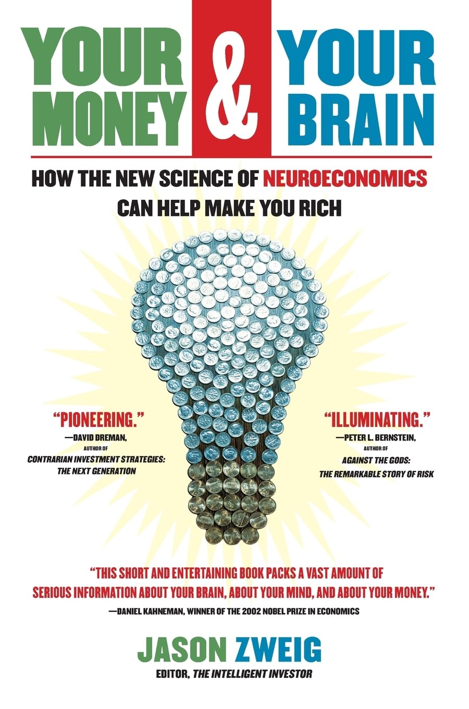

杰森·茨威格（Jason Zweig）是《华尔街日报》"聪明的投资者"专栏作者，也是格雷厄姆经典《聪明的投资者》修订评注版的注释者，早年曾任《钱》（Money）杂志资深撰稿人。写这本2007年出版的《当大脑遇到金钱》（Your Money and Your Brain）时，他没有停留在书斋，而是钻进神经科学实验室，把自己塞进功能性磁共振成像（fMRI）仪器，一边下注、一边看着屏幕上自己大脑的活动亮起来。全书立足于一门新兴学科"神经经济学"——把神经科学、心理学与经济学拼在一起，追问人在面对金钱时，脑子里究竟发生了什么。中文版《当大脑遇到金钱》由刘寅龙翻译，广东经济出版社2009年推出。
茨威格给出的许多结论令人不安。大脑中被称为伏隔核的区域，在你"预期"获利时释放的多巴胺，与它面对可卡因、美食或性时的反应如出一辙——真正让人上瘾的往往不是拿到钱，而是等着拿钱的那一刻。更麻烦的是，人脑是一台强迫症般的模式识别机器：只要连续出现两次上涨，它就几乎自动预期第三次，哪怕这串数字完全随机。茨威格用实验说明，这种"从噪音里看出规律"的本能，正是泡沫一次次重演的神经根源。与之相对，掌管恐惧的杏仁核会在亏损面前过度反应，让人在市场底部夺路而逃。
但这本书并不主张"消灭情绪、纯用理性"。茨威格引用神经科学研究指出，那些因脑部特定区域受损而无法调动情绪的病人，在某些实验里反而下注更冷静、赚得更多——可一旦回到真实生活，完全丧失情绪的人往往做出灾难性的决策。他的结论是："你会在驾驭情绪时得到最好的结果，而不是在扼杀情绪时（you will get the best results when you harness your emotions, not when you strangle them）。"因此每一章末尾，他都给出可操作的对策：预先写下投资纪律、给冲动设置冷却期、用清单对抗过度自信。这本书可视为卡尼曼《思考，快与慢》在投资场景里的一块拼图——前者讲认知捷径如何出错，后者把镜头对准出错时的脑区。需要留意的是，神经经济学在成书时仍很年轻，书中不少影像学证据后来在可重复性上受到质疑；把它当作理解自身冲动的一面镜子，比当作精确的操作手册更为稳妥。